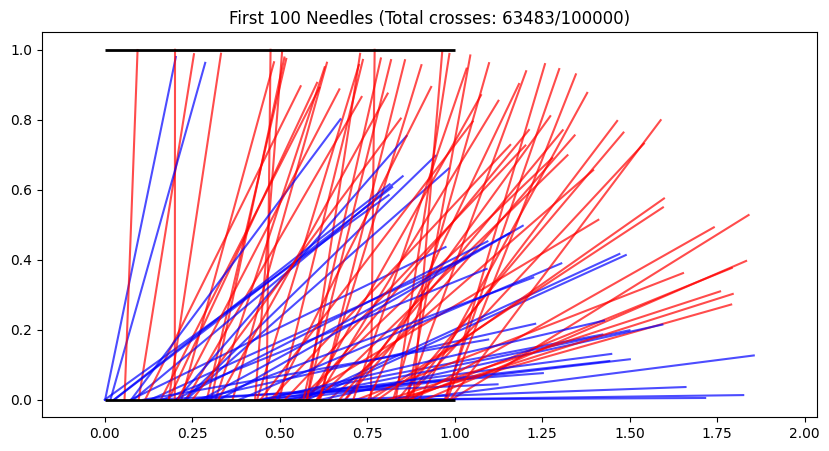

Problem 2
🎯 Estimating π with Randomness: A Monte Carlo Adventure
🌱 The Core Idea
"Throw darts randomly → Count hits → Estimate π!"
✅ Circle Method: Drop points in a square & count circle hits
✅ Buffon’s Needle: Drop needles on lines & count crosses
Part 1: The Circle Method 🟡
🎯 How It Works
- Draw a unit circle (radius=1) inside a 2×2 square
- Randomly throw "darts" (points) at the square
- Count hits inside circle vs total throws → Estimate π!
Formula:
\(\(\pi \approx 4 \times \frac{\text{Points Inside Circle}}{\text{Total Points}}\)\)
💻 Python Simulation
def buffons_needle(n_needles):
crosses = 0
plt.figure(figsize=(10,5))
for i in range(n_needles):
x = np.random.uniform(0, 1) # Line spacing = 1
θ = np.random.uniform(0, np.pi/2)
tip = x + np.sin(θ) # Needle length = 1
# Visualize first 100 needles
if i < 100:
plt.plot([x, x+np.cos(θ)], [0, np.sin(θ)],
color='red' if tip > 1 else 'blue', alpha=0.7)
if tip > 1:
crosses += 1
plt.hlines(0, 0, 1, colors='black', linewidths=2)
plt.hlines(1, 0, 1, colors='black', linewidths=2)
plt.title(f"First 100 Needles (Total crosses: {crosses}/{n_needles})")
plt.axis('equal')
plt.show()
return (2 * n_needles) / crosses if crosses > 0 else 0
print(f"π ≈ {buffons_needle(100_000):.5f}")
📊 Key Observations

- 100 points: Wild estimate (e.g., π≈3.2)
- 10,000 points: Close! (e.g., π≈3.1416)
- More points = Better accuracy (but slower)
Part 2: Buffon’s Needle Method 📌
🎯 How It Works
- Draw parallel lines (spacing = needle length)
- Drop needles randomly
- Count line crosses → Estimate π!
Formula:
\(\(\pi \approx \frac{2 \times \text{Total Needles}}{\text{Crosses}}\)\)
💻 Python Simulation
def buffons_needle(n_needles, needle_length=1, line_spacing=1):
crosses = 0
for _ in range(n_needles):
# Random needle position and angle
x = np.random.uniform(0, line_spacing)
θ = np.random.uniform(0, np.pi/2)
# Check if needle crosses line
if x <= (needle_length/2)*np.sin(θ):
crosses += 1
pi_estimate = (2 * n_needles) / crosses if crosses > 0 else 0
return pi_estimate
print(f"π ≈ {buffons_needle(100_000):.5f}") # Try increasing numbers!
📊 Method Comparison
| Method | Pros | Cons |
|---|---|---|
| Circle 🟡 | Faster convergence | Needs many points |
| Needle 📌 | Cool physical intuition | Slower convergence |
🌍 Real-World Applications
- Quantum Physics: Particle behavior modeling
- Finance: Risk assessment in stock markets
- Computer Graphics: Ray tracing algorithms
🚀 Try These Experiments!
- Vary point/needle counts → Watch accuracy improve
- Change needle length in Buffon’s method → See formula change
- Combine both methods → Average the estimates
"Monte Carlo methods: When math meets randomness!" 🎲✨
Run the code yourself to watch π emerge from chaos!